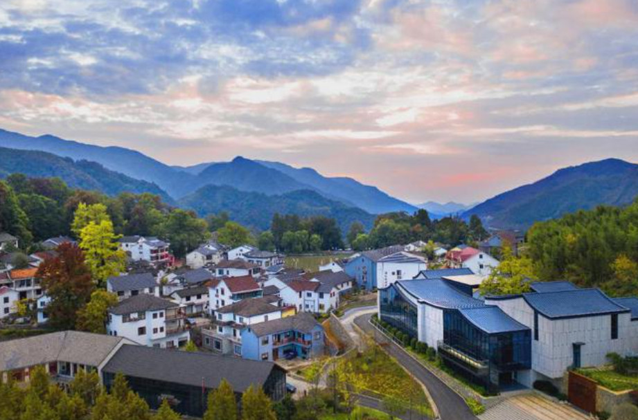

绿水青山就是金山银山

绿水青山就是金山银山，是时任浙江省委书记习近平，于2005年8月在浙江湖州安吉考察时提出的科学论断。
规划先行，是既要金山银山，又要绿水青山的前提，也是让绿水青山变成金山银山的顶层设计。浙江各地特别重视区域规划问题，强化主体功能定位， 优化国土空间开发格局，把它作为实践“绿水青山就是金山银山”的战略谋划与前提条件。从2005年到2015年，科学论断提出10年来， 浙江干部群众把美丽浙江作为可持续发展的最大本钱，护美绿水青山、做大金山银山，不断丰富发展经济和保护生态之间的辩证关系，在实践中将“绿水青山就是金山银山”化为生动的现实，成为千万群众的自觉行动。
2017年10月18日，习近平在十九大报告中指出，坚持人与自然和谐共生。必须树立和践行绿水青山就是金山银山的理念，坚持节约资源和保护环境的基本国策。
乡村振兴的意义
实现农民富裕和社会稳定
乡村振兴的目标之一是提高农民收入和生活质量，促进农村地区的发展，从根本上解决农民问题，减少城乡差距，提升社会稳定性。 通过振兴乡村经济，创造更多就业机会，改善农民收入状况，为农民提供更好的生活条件，增强他们的获得感和幸福感。
保护生态环境和促进可持续发展
乡村振兴强调绿色发展和生态保护，通过合理利用农村资源，促进农业、农村经济与生态环境的协调发展。 发展现代农业、生态农业和循环农业，推动农村产业结构升级，减少对环境的负面影响，保护农村的自然资源和生态系统，实现可持续发展。
促进农村文化传承和创新
乡村振兴不仅仅是经济发展的问题，也涉及到乡村文化的传承和创新。通过保护和弘扬乡村的传统文化和民俗风情， 提升乡村的文化内涵和吸引力。同时，鼓励农村创新创业，培育农村的人才和创新力量，推动农村经济和文化的协同发展。
成功案例
-

临安村位于浙江省杭州市，通过发展乡村旅游和农业产业，成功实现了乡村振兴。村庄修复了古建筑，开发了农家乐和生态农业，并引入了创新的管理模式和农村合作社，吸引了大量游客和投资。
-
福建省平潭岛是中国首个全岛开发开放试验区，通过发展乡村旅游、文化创意产业和现代农业，成功实现了乡村振兴。岛上修复了古建筑、发展了海岛旅游，并引进了现代农业科技，提升了农产品质量和效益。
-
北京市密云区龙庆峡村通过发展乡村旅游和农产品加工业，成功实现了乡村振兴。村庄修缮了古建筑、开发了乡村旅游景点，同时发展了农产品加工业，提高了农民收入。是非常成功的案例之一
-
甘肃省平凉市梁家河村是中国著名的乡村振兴示范村。该村通过发展乡村旅游、农产品加工和生态农业，成功实现了乡村振兴。村庄建设了农民创业园、生态农业示范区，并推动了乡村产业转型升级。